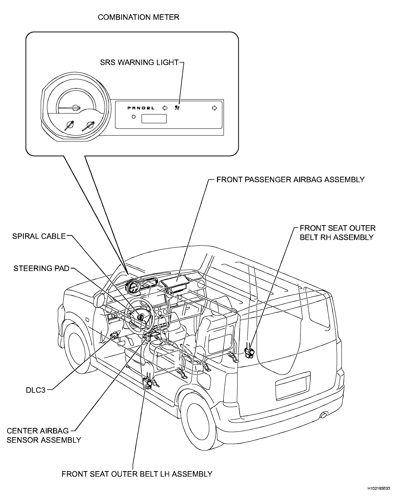
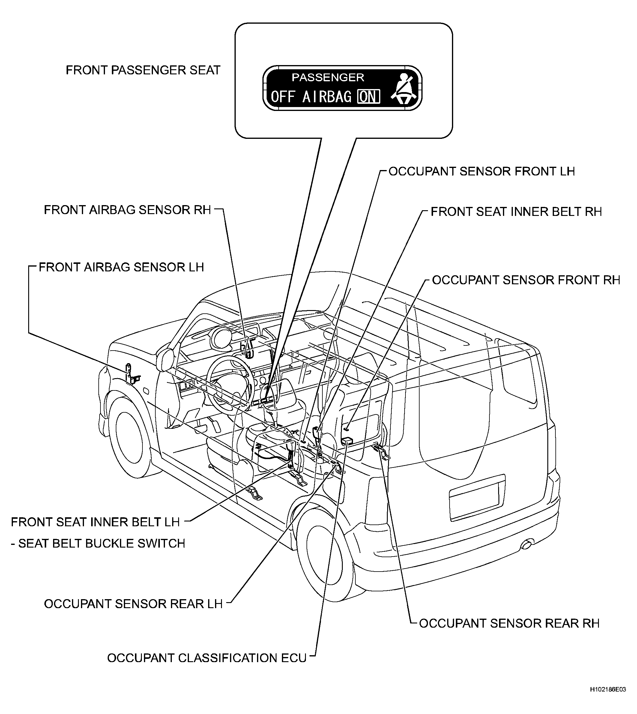

Parts Location (2005/12-)
Fig 1: Identifying Airbag System Parts Location (2005/12-) (1 Of 2)

Courtesy of © TOYOTA, LICENSE AGREEMENT TMS1002
Fig 2: Identifying Airbag System Parts Location (2005/12-) (2 Of 2)

Courtesy of © TOYOTA, LICENSE AGREEMENT TMS1002